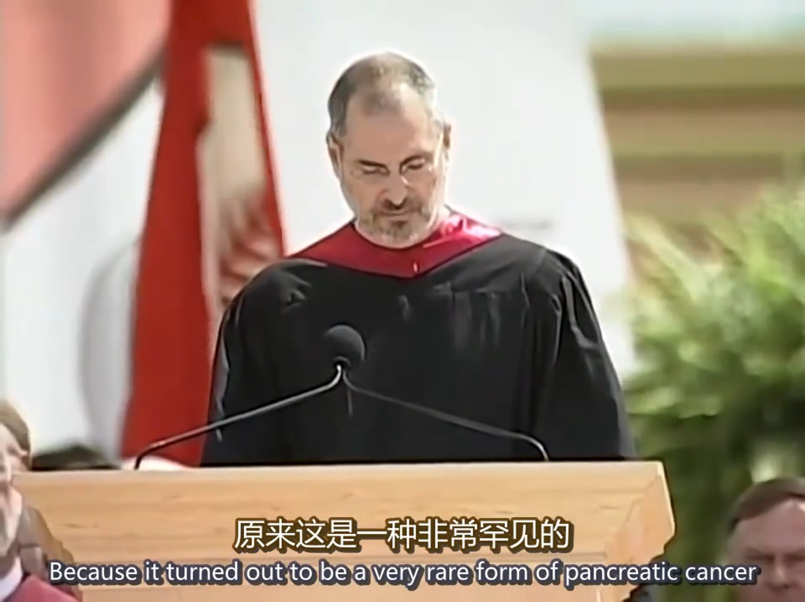

15:26播客时长 15:26
en · 抖音
 8:00
8:00播客时长 8:00
en · 抖音
 8:55
8:55播客时长 8:55
en · 抖音
播客时长 10:09
en · 抖音
播客时长 2:14:53
奇绩创坛 · B站
播客时长 10:18
彪哥终身学习 · B站
播客时长 19:18
小Lin说 · B站

14:25播客时长 14:25
TED口语官方 · B站
播客时长 59:38
MintChocoChips · B站
播客时长 59:10
flypig的小号 · B站
播客时长 19:28
小Lin说 · YouTube
没有符合条件的视频。